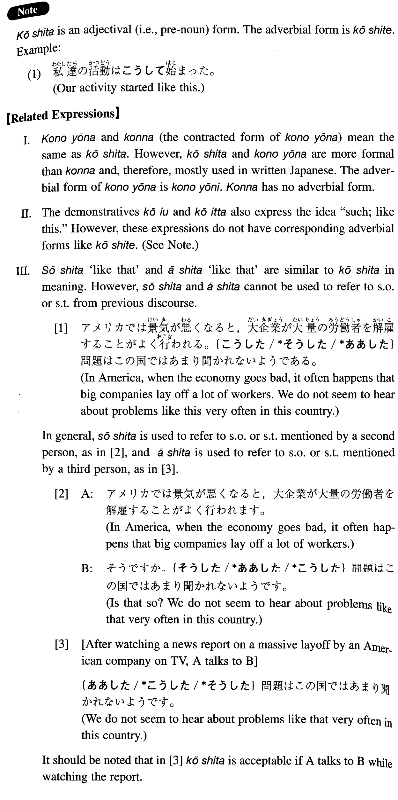

こうした (I. 130)
- (ks).
- こうした問題はこの国では聞かれないようである。
- We do not seem to hear about problems like this in this country.
- (a).
- こうした行為がどのような結果を招くかは誰の目にも明らかだ。
- It is clear to anyone what kind of result such behaviour brings about.
- (b).
- こうした経験は日本へ行ったことのある者なら誰にでもあるはずだ。
- Anyone who has been to Japan would have had such an experience.
- (c).
- 私はこうした話には耳を貸さないことにしている。
- I make it a rule not to listen to such stories.
